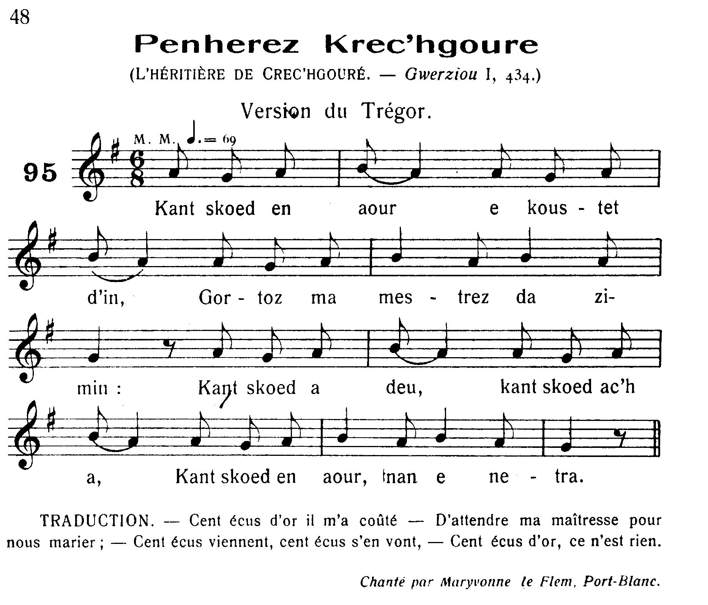
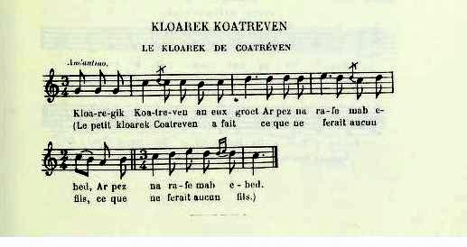
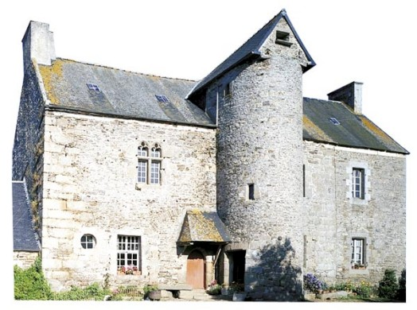

An Aotroù Kavaliour
Le sire cavalier
The match-making knight
Collecté par Théodore Hersart de La Villemarqué,
dans le 1er Carnet de Keransquer (pp. 102-104).
dans le 1er Carnet de Keransquer (pp. 102-104).

Mélodie 1
Arrangement Christian Souchon (c) 2014
|
Tirée de "Musiques Bretonnes" de Maurice Duhamel, Paris 1913. N° 95, p. 48, "L'Héritière de Crec'hgouré", musique de la ballade portant le même nom dans les "Gwerzioù I" de F-M. Luzel, page 434 Chantée par Maryvonne Le Flemm de Port-Blanc. |
Published in "Musiques Bretonnes" by Maurice Duhamel, Paris 1913. N° 95, p. 48, "L'Héritière de Crec'hgouré", tune to the ballad with the same title in "Gwerzioù I" by F-M. Luzel, page 434 Sung by Maryvonne Le Flemm from Port-Blanc. |
1° VERSION LA VILLEMARQUE
|
BREZHONEK AN AOTROU KAVALIOUR p. 102 I Pennherez 1. - Kant skoed a zeu, kant skoed a ya, Kant skoed er bloaz, nann, n'eo netra! Kant skoed er bloaz, nann, n'eo netra! Da zaou zen yaouank d'ober joa. Kloareg 2. - Kant skoed-an-heol 'n-eus koustet din Degas va mestrez tostik din. Degas va mestrez e toull va dor. 'vit miroud ne ven aet d'ar skol. 3. Evit un den yaouank da vevañ, Kant skoed aour'n-eus koustet din, Degas va mestrez e toull ma zi Bremañ vit daleañ va studi. Pennherez 4. - Mar d'eo da studi ez ait Evit ober goap o'ch deuet. Kloareg - Ne godison ket, va mestrez koant Rag ho ligne n'eo ket kountant. 5. Triwech kemener a zo ganin Oc'h ober 'n habit nevez din, Oc'h ober un habit a seiz griz, Da resev 'n urzhioù e Pariz. - II Kloareg 6. - Eurvat, eurvat, Aotroù chevalier! Deu't on d'ho kaout vit un afer: Da gouzout eo mar c'hwi a yefe Da goul din pennherez Koad-an-Nec'h. Chevalier 7. - Te oar, ervat, va breur mager, N'eo soñjet ket mat ho afer: Ur plac'h pemp mil skoed, a galitez, Mab ur c'hemener en-defe! p. 103 8. Mar 'ma ar pennherez en tu ganeoc'h, Kredi, serten m'am-bo he d'eoc'h!. Gant va kleze noazh deus va c'hostez, M'am-bo pennherez Koad-an-Nec'h! - III Chevalier 9. - Eurvat, eurvat, bras ha bihan Ya, eurvat, holl tud an ti-mañ! Tad - Diskennit, Aotroù Chevalier, d'an ti, Lakait ho marc'h er marchosi! 10. Ha deuit er ger da zijuniñ! Chevalier - Nann, n'on ket 'vit tamm nag evit Evañ lommik ebet mui, Ken ho-po klev't va c'hefridi. Tad 11. - Peseurt kefridi zo ganeoc'h? Aotroù chevalier, me c'houl deoc'h. Chevalier - Ar pennherez me a faot din, D'am breur-mager da zimeziñ. Tad 12. - Re ziwezhat ho-peuz prezet: Rag ar pennherez zo dimeet. Ema-hi du-ze barzh an ti Oc'h ober bal hag akademi: Great eo an akord da zimeziñ. - p. 104 Pennherez 13. - Mar n'eo ket c'hoazh an eur sonet Deus Bariz ez on distroet. Mez ekipit din buhan va inkane! Me ya da Bariz adare. Tad 14. - Da Bariz c'hwi ned efet ket. Da Goad-an-Nec'h ne laran ket. Chadennoù awalc'h zo barzh va zi Evit chadennañ daou pe tri. Pennherez 15. - Serrit ho pek digant ho chadennoù, Ha rentit din-me va madoù! Na rentit din-me va madoù 'n ho ti pell-zo d'ho profitoù. - 16. Matezik vihan dalc'h ma glevas, D'an traoñ gant an diri a zeuas. D'an traoñ gant an diri a zeuas. Matez - Diskennit, pennherez, deuit d'an diaz 17. Ema ho tad barzh ar kegin Hag eñ ken glas 'vel ar rezin. Hag eñ ken glas 'vel ar marv. 'N aotroù chevalier eñ o lazhañ. |
TRADUCTION FRANCAISE LE SIRE CAVALIER p. 102 I Héritière 1. - Cent écus par-ci, cent écus par là, Cent écus l'an ne comptent pas! Quand il s'agit d'unir deux jeunes gens, Qu'est-ce donc, cent écus par an? Clerc 2. Cent écus-soleils il m'en a coûté D'avoir ma belle à mon côté. L'école, devrais-je en faire mon deuil, Depuis qu'elle a franchi mon seuil? 3. Un jeune homme doit vivre assurément: J'ai perdu cent écus d'or, quand Vous franchîtes le seuil de mon logis, Avant que mes cours soient finis! Héritière 4. - Si vous partez étudier de ce pas, C'est que vous vous moquez de moi. Clerc - Je ne me moque pas. Je crains pourtant Que les vôtres soient mécontents. 5. Or dix-huit tailleurs s'affairent déjà Autour d'un habit neuf pour moi, De soie grise pour mon ordination A Paris. Il est prêt, dit-on - II Clerc 6. - Je vous salue, Monsieur le chevalier! Puis-je savoir si vous iriez En mariage de ma part demander L'héritière de Coatannay? Chevalier 7. - Frère de lait, tu ne doutes de rien, Quel projet hardi que le tien! Unir une noble à cinq mille écus Au fils d'un tailleur, qu'en dis-tu? p. 103 8. Mais si l'héritière est de ton côté, Sois sûr que je te soutiendrai! A la pointe de l'épée, j'obtiendrai L'héritière de Coatannay! - III Chevalier 9. - Bonjour, bonjour à tous, petits et grands, Et à vous, maître de céans! Le beau-père de l'héritière - Entrez, Chevalier! Mettez, je vous prie, Votre cheval à l'écurie! 10. Entrez et partagez notre repas! Chevalier - Merci, je ne mangerai pas Ni ne goûterai de votre boisson, Que vous ne sachiez ma mission. Beau-père 11. - Quelle est cette mission? Vous m'intriguez Beaucoup, Monsieur le chevalier. Chevalier - De l'héritière, je viens demander La main pour mon frère de lait. Beau-père 12. - Votre demande vient trop tard, sachez: Qu'on va bientôt la marier. Elle parfait ici, son instruction; La danse et les arts de salon, Et que le contrat est signé. - p. 104 Héritière 13. - Non, l'heure n'en a point encor sonné: De Paris je viens de rentrer, Mais qu'on me selle un cheval, il le faut! Je retourne à Paris tantôt. Beau-père 14. - A Paris vous ne retournerez point. A Coatannay je vous retiens. Nous avons assez de chaînes je crois Pour en enchaîner deux ou trois. Héritière 15. - Enchaînez votre museau, voulez-vous? Et rendez-moi mes biens, surtout! Vous en tirez suffisamment profit, Depuis que vous êtes ici. - 16. La servante, alarmée par tous ces cris, Vite les marches descendit. Le spectacle fit qu'elle s'écria: Servante - Madame, il faut venir en bas! 17. Votre père est à l'office et il est Aussi livide qu'un noyé. Aussi pâle que la mort. Accourez! Le chevalier va l'embrocher. Traduction: Christian Souchon (c) 2014 |
ENGLISH TRANSLATION THE MATCH-MAKING KNIGHT p. 102 I Heiress 1. - A hundred crowns here, a hundred crowns there, In a year, for that who would care? A hundred crowns there, a hundred crowns here, For our happiness: not paid dear! Clerk 2. A hundred "sun-crowns" is what it cost me To have you on my side, dearie, Since on my threshold I saw you once stay, And to the school stand in my way. 3. A young man must mind that he might not starve: A purpose that these crowns had served, Would you not now stay in front of my door, So that I might study no more! Heiress 4. - Yes, if you were leaving to Paris now, You would make fun of me, somehow. Clerk - Of making fun I do not think my dear: Your parents' wrath is what I fear. 5. Tailors are making - eighteen as a whole - For me a chasuble and stole; An alb of grey silk: shall I be detained? In Paris I shall be ordained... - II Clerk 6. - A good day to you, my Lord Chevalier! You won't like my request, I fear: To ask for the hand in marriage for me Of the heiress of Coatannay. Chevalier 7. - Foster-brother, I wonder if you did Think of the import of your bid. Make a noble girl, worth five thousand crowns To a tailor's son to stoop down! p. 103 8. But if the heiress agrees with your scheme, Be sure, I'll make come true your dream! Coatannay's heiress shall my unsheathed sword Conquer for you, upon my word! - III Chevalier 9. - Hello, hello to you all in this house, Lord of this manor, man and mouse! Heiress' stepfather - Dismount, Chevalier! You're welcome, of course! My stable's waiting for your horse. 10. Come right in and have dinner with us all! Chevalier - I won't eat a bit, big or small, I won't drink a drop of your precious wine, Ere you heard a request of mine. Stepfather 11. - What is your request, my dear chevalier? That's a thing I'm anxious to hear. Chevalier - For the heiress' hand I came on behalf Of my foster-brother to ask. Stepfather 12. - Your request is made a little too late: She'll marry another soul mate. She's here and learns things that her station suit: Dancing to the sound of the flute... The contract is ready, to boot. - p. 104 Heiress 13. - But for that the bells as yet did not ring! From Paris I am returning Presently have a horse, for me harnessed For I'm riding back to Paris. Stepfather 14. - To Paris you shall not travel once more! You shall not pass Coatannay's door! In this house we have enough iron chains Two or three madmen to retain. Heiress 15. - These chains round your own muzzle you should wrap, All that is due to me give back! Long enough you have profited by it: Since into this house you married. - 16. The maidservant was alarmed by the blare, And hurried at once down the stairs. And the scene she saw gave her quite a fright: Maid - Madam, come down and stop the fight! 17. Your father did in the kitchen retreat And he is as white as a sheet Hurry up! Your father is deathly pale! The knight's visit you must curtail! Translation: Christian Souchon (c) 2014 |
NOTES:
|
Bibliographie: Manuscrits: - Coll. Penguern, t.90: Koad an Nay (Henvic, 1851) (= Revue Celtique 1902 = Gwerin 6); t.95: Coat an Ne (= Revue Celtique 1902); t. III, 45: Gwerz Koad an Ne, t.97: Pennherez Crec'hgouré.. - Luzel: Ms 17 (Quimper): Penn-herez Crec'hgouré (rec. par J. Le Huérou) (frag.). Recueils: - Luzel, Gwerzioù tome 1: Penn-herez Crec'hgouré (Prat, 1836) (rec. par J. Le Huérou). - N. Quellien, Chansons et danses des Bretons: Kloareg Koatreven (Saint Clet). Périodiques: - Luzel, Le conteur breton, 17.2.1866: L'héritière de Coatgouré. L'héritière de Crec'hgouré Dans la version beaucoup plus développée, collectée par l'oncle de F-M. Luzel, J-M. Lehuérou, dans la commune de Prat, en 1836, auprès de Jeanne-Yvonne Le Merle, âgée de 75 ans, comme dans la plupart des autres versions, l'héritière est dite de Crec'hgouré et le chevalier est appelé marquis de Coatanhai. L'histoire est peu différente: Le clerc se lamente sur les cent écus par an que lui ont coûté ses études de prêtre. Elles l'ont presque conduit à l'ordination qui devait avoir lieu à Paris et pour laquelle les habits sacerdotaux étaient prêts. Mais il a rencontré une jeune fille noble qui s'est éprise de lui et lui a énergiquement suggéré d'envoyer le frère de lait du garçon , le marquis de Coatanhai, demander sa main en son nom à son [beau] père, le marquis de Crec'hgouré. Au delà des préjugés de classes. Comme dans la version de La Villemarqué, le clerc, fils d'un paysan et non d'un tailleur, hésite à présenter sa requête à Coatanhai, et ici encore, son frère de lait après avoir souligné que cette mésalliance ne serait pas convenable, accepte bientôt, dès lors que c'est la volonté de la demoiselle. Coatanhai se rend chez Crec'hgouré: il souligne que son mandant est son frère de lait et un "écrivain aux ordres du roi" (skrivagner en dalc'h ar roue). Un petit page va chercher l'héritière à la demande de Coatanhai. Ce dernier, lui dit sa servante, "est aussi bleu de colère que le bluet" (Hag eñ ker glas vel ar glizinn). Quand la jeune fille apprend de la bouche de Coatanhai que son bien-aimé est parti à Paris pour y être ordonné prêtre, elle décide de s'y rendre en dépit de son beau-père qui menace de l'enchaîner. En guise de réponse, elle lui réclame les rentes qu'il touche à sa place depuis dix-huit ans. En réalité le clerc était caché dans la cour avec un cheval tout harnaché pour emporter son héritière. Le père finit par donner son consentement: "Si vous avez été choisis par Dieu, Petite héritière, je ne vous retiendrai pas" (Mard' oc'h-c'hwi gant Doue choazet, Pennherezik, n'ho dalc'hin ket). Le chant s'achève par l'épilogue qu'on va lire et qui complète la version collectée par La Villemarqué qui se termine de manière quelque peu abrupte. La version de Narcisse Quellien Dans la version collectée par Narcisse Quellien, à Prat, (à une quinzaine de km au nord de Plouagat où sont localisés les noms cités dans la gwerz de Luzel, le clerc s'appelle "clerc de Coatréven" et il est le secrétaire personnel de son frère de lait, le marquis de Coatanhai. L'héritière s'appelle non pas "Crec'hgouré" mais "Coatgouré". Détail piquant, son père tente de "placer" sa fille auprès du marquis qui fait l'intermédiaire: "Si c'était pour vous que vous l'eussiez demandée, Monsieur de Coatanhai, je ne vous l'aurais pas refusée" (Ma vije vidoc'h 'poa he goulet, Aotroù Koad-an-Nec'h, na vijec'h refuzet). Il semble que la messe d'ordination doive être dite à Saint Brieuc et c'est là que l'héritière décide de se rendre toute affaire cessante, avec dix huit chevaux attelés à son carrosse! Très férue de mathématiques, elle calcule la part de biens qui lui revient: "Mille sept boisseaux de froment en Bretagne du côté de sa mère et cinq mille écus en France, -ou peut-être en pays gallo- ... Autant au pays de Léon" (Mil boellad gwiniz ha seizh 'Meus deus beurz va mamm, goste Breizh, Ha pemp mil skoed leve barzh Bro-C'hall... Kemend all en Bro Leon). C'est bien suffisant pour vivre à deux! (Me oar avat n'eus ket eñ a dañvez, Med madoù awalc'h zo deus va re!). Deux Versions collectées par J-M. de Penguern Les chansons de "kloareg" étaient très répandues en Basse-Bretagne, surtout dans le pays de Tréguier. Le "kloaregik" était devenu le type du soupirant, évincé par le père, mais agréé par la fille. Voir le "sonn" du "Bonomik". C'est Jean-Marie de Penguern qui a recueilli la version la plus aboutie du présent chant (tome 95 des manuscrits). Il en a aussi consigné la version la plus courte. E. Ernault qui en rend compte dans le tome 23 de la "Revue Celtique" en attribue la brièveté à la mémoire défaillante des chanteurs qui l'ont toutefois enrichie "d'un trait de grossière naïveté (au vers 8)" que l'on retrouve, avant eux, sous le calame du vieil Homère (cf. Odyssée, I, 366). Ces deux versions figurent ci-après sous les N°3 et 4. Si l'origine trégoroise de ce chant ne fait aucun doute, on serait bien en peine, avoue Luzel de "donner aucun éclaircissement historique sur cette chanson. [Il sait] seulement qu'il existe dans la commune de Prat quelques ruines informes, comme une ancienne motte féodale, qu'on appelle dans le pays "Kastell Crec'hgouré". Dans la commune de Trézélan, à environ deux lieues de là, il y a aussi un manoir de "Coatgouré" encore habité et les chanteurs disent tantôt "Crec'hgouré", tantôt "Coatgouré", mais le plus souvent "Crec'hgouré"... |
Bibliography: Manuscripts: - Coll. Penguern, t.90: Koad an Nay (Henvic, 1851) (= Revue Celtique 1902 = Gwerin 6); t.95: Coat an Ne (= Revue Celtique 1902); t. III, 45: Gwerz Koad an Ne, t.97: Pennherez Crec'hgouré.. - Luzel: Ms 17 (Quimper): Penn-herez Crec'hgouré (coll. by J. Le Huérou) (frag.). Collectionss: - Luzel, Gwerzioù book 1: Penn-herez Crec'hgouré (Prat, 1836) (coll. by J. Le Huérou). - N. Quellien, Chansons et danses des Bretons: Kloareg Koatreven (Saint Clet). Périodicals: - Luzel, Le conteur breton, 17.2.1866: L'héritière de Coatgouré. The heiress of Crec'hgouré In the lengthy version, recorded by F-M. Luzel's uncle, J-M. Lehuérou, in the parish Prat, in 1836, from the singing of Jeanne-Yvonne Le Merle, aged 75, the heroine is the unique heiress of the Crec'hgouré estate and the knight is named marquis Coatanhai. The plot is slightly different: The clerk laments about the yearly hundred crowns that were spent in vain to pay his study at the priest seminary which was interrupted just before he could be ordained priest in Paris: The sacerdotal attire was already prepared, when a young noble girl fell in love with him and prompted him imperatively to entrust his foster-brother, Marquis Coatanhai, with the task of asking, on his behalf, for her hand in marriage her [step] father, Marquis Crec'hgouré. Crossing the class barriers Like in La Villemarqué's version, the clerk, who is a farmer's, not a tailor's son, hesitates to bring forth his request, but, here too, his aristocratic foster-brother, after he had stressed how improper this misalliance would be, accepts the mission, inasmuch as, in doing so, he carries out the young lady's true wish. Marquis Coatanhai repairs to Crec'hgouré manor: he emphasizes that he speaks on behalf of his foster-brother who is a "letter-writer by appointment to the king" (skrivagner en dalc'h ar roue). A page goes upstairs and fetches the heiress at the request of Coatanhai, and her maidservant tells her that the latter is "as blue with anger as a cornflower" (Hag eñ ker glas vel ar glizinn). When she hears from Coatanhai that her sweetheart has gone to Paris to be ordained, she declares that she will follow him there to dissuade him, in spite of her father menacing her to chain her up. She requites his menaces with a claim to the part of her income he has availed himself of for eighteen years past. In fact the clerk is waiting outside with a harnessed horse to elope with his dear heiress. The father finally gives his consent to their marriage: "Since it was God who made the match, Little heiress, I won't retain you" (Mard' oc'h-c'hwi gant Doue choazet, Pennherezik, n'ho dalc'hin ket). The song ends up with the epilogue below which completes and clarifies the somewhat abruptly ending version collected by La Villemarqué. Narcisse Quellien's version In a version collected by Narcisse Quellien, in Prat, about fifteen kilometres north of Plouagat, the parish where the place names quoted in the gwerz are found, the clerk is named "clerk of Coatréven" and he is his foster-brother, Marquis Coatanhai's amanuensis. The heiress's name not "Crec'hgouré", but "Coatgouré". A piquant detail: her father attempts to marry off his daughter to the marquis who acts as a middleman: "If you had asked for her hand in your own name, Lord Coatanhai, you wouldn't have been denied" (Ma vije vidoc'h 'poa he goulet, Aotroù Koad-an-Nec'h, na vijec'h refuzet). We understand that the ordination mass will take place in Saint Brieuc which is therefore the destination of the heiress' sudden travel, with eighteen horses hitched up to her carriage! Since she is, apparently very proficient in math, she figures out her share in the income of the family: "A thousand and seven bushels wheat from Brittany on the distaff side and five thousand crowns from France, - or from French speaking Brittany - ... Again as much from the bishopric Léon" (Mil boellad gwiniz ha seizh 'Meus deus beurz va mamm, goste Breizh, Ha pemp mil skoed leve barzh Bro-C'hall... Kemend all en Bro Leon). This is enough for a husband and a wife to live on! (Me oar avat n'eus ket eñ a dañvez, Med madoù awalc'h zo deus va re!) Two versions collected by J-M. de Penguern The "kloareg" songs were very popular in Lower-Brittany, especially in the Tréguier area. The "kloaregik" (young clerk) was the typical suitor, turned down by the father, though he is the daughter's beloved. See the song of"Bonomik". It was Jean-Marie de Penguern who recorded the most perfect version of the song at hand (Book 95 of the MSs). He also collected the most concise one. E. Ernault who edited it in copy N°23 of the "Revue Celtique" ascribes its shortness to the unreliable memory of singers who, however enriched it with "a naively rude feature (in line 8)" in which, before them, old Homer already indulged (cf. Odyssey, I, 366). Both versions are presented below under N°3 and 4. If this song was, without doubt, composed in the Tréguier area, it would be difficult, as admitted by Luzel, to "append to it any historical explanation. [He only knows] that in the parish Prat some shapeless ruins are still extant, a sort of feudal heap of stones, locally called "Kastell Crec'hgoure". In the parish Trézélan, about two leagues away, there also is a manor "Coatgouré", still inhabited. The singers pronounce sometimes "Crec'hgouré", sometimes "Coatgouré", but most often "Crec'hgouré"..." |
2° FRAGMENT DE LA VERSION LUZEL

Mélodie 2
Arrangement Christian Souchon (c) 2014
|
Tirée de "Chansons et danses des Bretons" de Narcisse Quellien, Paris 1889, p.243: "Le clerc de Coatréven" (intrigue identique), p. 84, chanté par Françoise Feutel, marchande foraine, de Saint-Clet (22). |
From "Chansons et danses des Bretons" by Narcisse Quellien, Paris 1889, p.243: "Le clerc de Coatréven" (same plot), p. 84, sung by Françoise Feutel, costermonger at Saint-Clet (22). |
|
BREZHONEK PENHEREZ GREC'HGOURE 18. Setu int dimezet hag euredet Pa 'z int gant Doue choazet. (div w.) Chevalier 19. - Va breur-mager te az-peus bet Ur chañs ha na veritez ket! Perc'henn pemp mil skoed leve zo bet Ha te n'az-peus ket ur gwennek! 20. Setu ar bennherez aze Diwar bouez va lañs ha va c'hleze. Mar erru ganti nemet mat Me dreuzo m' c'hleze dre da wad! |
FRANCAIS L'HERITIERE DE CREC'HGOURE 18. Les voilà donc fiancés et mariés Et ce choix c'est Dieu qui l'a fait. (bis) Chevalier 19. - Mon frère de lait, tu peux te flatter D'un bonheur bien immérité! Cinq mille écus de rente à ce manant Qui n'avait pas un sou vaillant! 20. Cette héritière, je te l'ai gagnée A la pointe de mon épée. Si jamais tu lui fais le moindre mal, Ledit fer te sera fatal! |
ENGLISH THE HEIRESS OF CREC'HGOURE 18. The two lovers are betrothed and wed: A match that God Himself has made. (twice) Chevalier 19. - My foster-brother you may pride yourself Of a luck that you don't deserve! A yearly income of five thousand crowns. You had no farthing of your own! 20. Over there I see the heiress you wan. I conquered her with my sword drawn. Should misfortune befall this flower bud, I'd drain with the same sword your blood! - |
3° VERSION LONGUE COLLECTEE PAR DE PENGUERN
Long version collected by De Penguern
Coat an Né (orthographe d'origine - Original spelling)
Une traduction anglaise (E) ou française (F), colonne par colonne, s'obtient en cliquant sur les vignettes "+" (et "-" pour l'effacer).
Click on "+" boxes to diplay an English (E) or a French (E) translation of each opposite column and on "-" boxes to remove it.
Une traduction anglaise (E) ou française (F), colonne par colonne, s'obtient en cliquant sur les vignettes "+" (et "-" pour l'effacer).
Click on "+" boxes to diplay an English (E) or a French (E) translation of each opposite column and on "-" boxes to remove it.
|
E Kant skoet an heol na n'int netra. 2. Kant skoet an heol he koustet din Kad ma mestrez a dostik din. 3. Pa c'hen d'ar studi a d'ar skoll Welen ma douss war doul he dor : 4. Demad, ma douss, ma dimezel Me ho salud a dia bell. 5. Ma vijen tost me raje wel De mad ma Doussik Izabel. 6. Tostaït, kloareg, ha deut an ti Da gontan din doare ar studi. 7. M eus ket amzer da abuzin, Triwac'h kemener zo ganin O c'h ober eun habid neve din. 8. C'h ober din eun habit satin gris Da vont a d'are da Baris. 9. Da bara c'h et tu d'ar studi Ma na c'houlet ket belegin ? 10. Da bara c'h et tu d'ar studi, Ma ho c'h eus c'hoant da dimezi ? 11. Ewit diskin skruivan ha len, Gonit arc'hant gant ma fluen. 12. Pa n'eo eur pried co a fell din Ne n'eo ket eun den a studi. 13. Ankoët ar skoll ag ar studi Ha beet sonj mad d'eni eureujin. 14. Ma mestrezek, ma doussek koant Ho ligne ne neket kontant. 15. Digasset ganec'h Koat an ne, D'em goulen digant ma ligne, 16. Ha mar refuzont Koat an ne, A dra serten, na rinket me. 17. Ar c'hloarek vel neus klevet En Koat an ne e nen rentet. 18. De mad a joa ar maner man, Ma breur mager pelec'h e man ? |
E Ma c'hout en koulz man a vale ? 20. Neubeud a woëc'h a deud dam goëlet A me a ran eus o karet. 21. Me zo deut aman gant eur sujet Ag am eus morc'het eus hen laret. 22. A te neus tanet pe lac'het, Lac'het pe violet merc'het, Ma teus morc'het eus hen laret ? 23. Na meus na tanet na lac'het Lac'het na violet merc'het 'Treo ze ouïn na direont 'ket. 24. Deut ho d'ho klask da dont ganèn- Da di'r Markis, da Krec'hgoure Da c'houl an Dimezel a c'hane. 25. Ma breur mager, te war er fad En dra ze na ve ket groet mad ! 26. Ve eur païzant a neve Pennerez pemp mil skoet levé ! 27. Ha pa dije pemp kant mil skoet Wel a voa ganin bean belek Mes ar plac'h n'en permetfe ked. 28. Mar man er plac'h en tu genit te, Deomp breman de Krec'hgoure, 29. Me mo aneï dit ac'hane War boëss ma lanss ha ma kleve. 30. Markis Koat-an-ne a levere En Krec'hgoure pa n'arrie : 31. Bonjour a joa er maner man, Otro 'r markis pelec'h e man ? 32. Diskennet, Markis, ha deut an ti, Ma heï ho marc'h er marchossi. 33. Na ziskennin na nin an ti, Na neï ma marc'h er marchossi, 34. Ken a mo bet ma c'hevridi. Aoën a meus rak fachiri. 35. Na Krec'hgoure vel m'en klevas Neuze souden a respontas : 36. Wit fachiri na savo ket Mar man em zi pes a glesket. |
E Da glask ar Bennerez a teuan, 38. Wit e rein d'em breur mager, Mab a ti mat ha skruivanier. 39. Eun den disket a ligne vad Deus koste e vam hak he dad. 40. Darn deus he dud zo senechalet Darn Barnerien ha prokuloret, 41. Barnerien en dech ar Roue Senechalet en Coat an ne. 42. Ha pa delc'hfent hanter kant stad, Pa na nin ket demeus ar goad An dra ze ne ve ket groet mad, 43. E ve roet d'eur skruivanier Merc'h a ti nob ha dimezel ; 44. Ve eur païzant a neve Pennerez pemp mil skoet leve. 45. Ar c'houarnerez vel m'ho klevas Er kroec'h gant ar vinss a pignas : 46. Deut an traou lia diskennet pront Man duman ho tad hak ho ïont; 47. Man Koat an ne bars er gigin Hak en ken glas ag er glizin 48. Glas vel er glizin en kreïz an han Lac'han ma mest a fell dean. 49. Ar Bennerez pa deus klevet En traou gant ar vinss zo diskennet, A Koat an ne deus saludet. 50. Bonjour d'ac'h, Otro Coat an ne, Pelec'h e chomet ma c'harante ? 51. Ho preur mager pelec'h a man ? Hennés eo an hini a glaskan. 52. Et eo ar kloareg war he c'his, War eun ankane da Baris, 53. Da wit eur chazub sulaouret Do ofernian pa vo Belek. 54. Ewit Belek sur na vo ket Rag promesse dime neus groët. Sort dime ven ket trahisset... |
E Ma hin da Baris war he lerc' h. 56. Na Krec'hgoure vel ma klevas Gant fulor bras a respontas : 57. Wit da Baris na nefet ked; Gant chadennou vefet staget, 58. Exemp vad dan Demezelet A sot ho fen gant païzantet. 59. Mar zo n'ho ti chadennou bras Leket hi da staga ho chass, 60. Sort dime na vent ket staget Keït a ma vo tudjentil er bed. 61. Na gomzet ket din a chadennou, Komzomp da regli hon kontjou. 62. Komzet da reïn ma madou din Ma hin gante lec'h ma kerin Gant ma kloaregek da demezin. 63 . Na Koat an ne ag a neuze Ag hen ho difoënan he kleve; 64. Ag hen diskoël he kleve noas N'en ober gantan sin ar groas ; 65. E reas gentrou de varc'h bras, Mes er Markis all a zouzas. 66. Roet din ta liou hag eur bluen, Roet din eun tam paper gwen, 67. Ma rin deï pe deus fantazi Permission ewit demezi. 68. Markis Koat an ne a levere De vreur mager ag en de se [1]: 69. Dali, sell da Bennerez aze Me meus goneet aneï dide War boess ma lanss ha ma kleve; 70. Mar gress te deï nemert mad Me walc'ho ma kleve gant da wad. 71. Be sonj, ma breur mager breman E merc'h da wreg d'am c'hoar henan. |

4° VERSION COURTE COLLECTEE PAR DE PENGUERN
Short version collected by De Penguern
KOAT AN NAY (orthographe d'origine - Original spelling)
|
BREZHONEK 1. Pa vezan bemdez e vond dam skol E vez va mestrez e tall e dor 2. Hag hi e lavaret ken ardant: Dibonjour deoc'h va dousik koant. 3. Doc'h ar c'homzo a leveret Va godissa eo a ret. 4. Neket o godissa eo a ran, Kousket ganec'h a zeziran. 5. Deud gant ar Markis Koatanne Dam goulen digant va ligne. 6. Dam goulen digant va ligne, Ne veet ket refuset men toue. 7. Dibonjour dec'h, markis Koatannay. A deoc'h ive [1], va breur mager. 8. Deud tu ganeme da Crec'hgoure Da houlen ar penerez ahane, Ne viot ket refuset e men toue. 9. Va breur mager, c'hui e voar ervad An dra ze ne ve ket gred mad, 10. Perc'hen pem mil skoët a levé A lignez nobl, a galite. 11. Rentet tu dime va mado A baoue ma ze va zad maro. 12. Breman pa zeo ed va zud gant Doue Me zo mest d'ober va bolonté, 13. Da kemeret va santimant, An den man pa ze kontant. |
FRANCAIS 1. Quand je vais chaque jour à l'école, ma maîtresse est près de sa porte. 2. Et elle de dire avec ardeur: Bonjour à vous, mon petit doux joli. 3. D'après les paroles que vous dites, c'est vous moquer de moi que vous faites. 4. Ce n'est pas me moquer de vous que je fais: je désire dormir avec vous. 5. Venez avec le marquis de Coatanné me demander à ma famille ; 6. me demander à ma famille, vous ne serez pas refusé, je le jure. 7. Bonjour à vous, marquis de Coatanné. Et à vous aussi, mon frère de lait. 8. Venez avec moi à Crec'hgouré en demander l'héritière; vous ne serez pas refusé, je le jure. 9. Mon frère de lait, vous savez bien, cette chose ne serait pas convenable : 10. la propriétaire de cinq mille écus de rente, (fille) de famille noble, de qualité ! 11. Rendez-moi mes biens, depuis que mes parents sont morts. 12. Maintenant que mes parents sont allés avec Dieu je suis maîtresse de faire ma volonté; 13. de suivre mon goût, puisque cet homme consent. |
ENGLISH 1. When I walk to school every day, My sweetheart waits on the threshold of her house. 2. And she says to me fervently: Good morning, handsome little man! 3. Judging by your words You are making fun of me. 4. Not at all! I am quite serious: I want to sleep with you. 5. Come with marquis Coatanné And ask my relatives for my hand; 6. Ask my relatives for my hand, You won't be refused I swear it. 7. Good day to you, Marquis Coatanné. Good day to you, my foster-brother. 8. Come with me to Crec'hgouré And ask [on my behalf] for the heiress; You won't be refused I swear it. 9. My foster-brother, you know it, This would not be proper: 10. She is the owner of a 5,000 crown income, (A descendant) of noble lineage, a person of quality! 11. Give me my goods back, All that is due to me since the day my parents died! 12. Now that my parents went to God I have a right to do as I choose; 13. And I will do what suits me best, As far as this gentleman agrees. |

Manoir de Coatgouray, près de Bégard